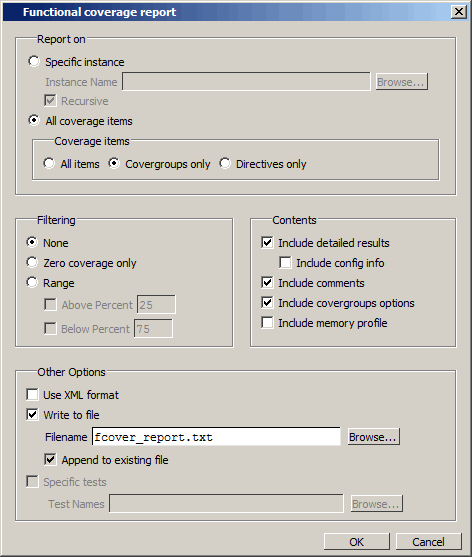
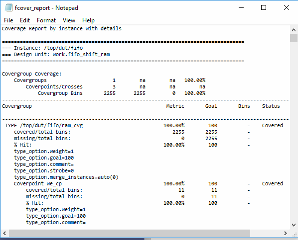

You can
create functional coverage reports using dialog boxes accessible
through the GUI or via commands entered at the command line prompt.
Procedure
- Create
a functional coverage report using the GUI.
- Right-click
in the Cover Directives window and select Report.
This opens the Functional coverage report dialog box (Figure 1).
Figure 1. Functional Coverage
Report Dialog Box
- With All coverage
items selected, select Covergroups
only.
- Select Include
covergroups options.
- Select OK to
write the report to the file fcover_report.txt.
The actions
taken in the GUI are echoed in the transcript as follows:
coverage report -detail -cvg -comments -option
-output fcover_report.txt /.
The
report will appear automatically in Questa SIM Notepad
as shown in Figure 2.
Figure 2. Functional Coverage Text Report
- You can
also create textual, html, and exclusion coverage reports using
the menu selection.